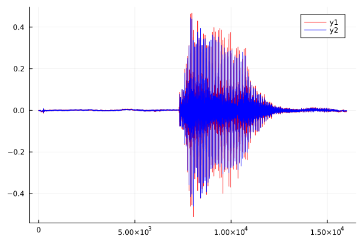
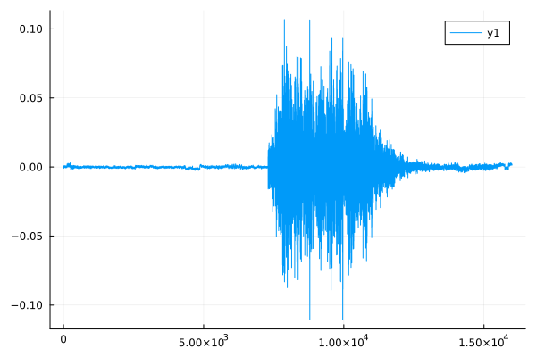

using FileIO
using CUDA
using CUDA.CUFFT
using Plots
using StatsBase
w(x) = reshape(x,128,125);
g(x) = CuArray(x);
ℱ(x) = rfft(x,1);
invℱ(x) = irfft(x,128,1);
H(x) = heatmap(collect(x));
interleave(c,s) = reshape(cat(c,s,dims=1),size(c,1),2*size(c,2));
deinterleave(x) = x[:,1:2:end] + 1im*x[:,2:2:end];
mse(x,x̂) = mean( (x-x̂) .^ 2 );
compand(x) = 0.125 * sign.(x) .* log.(1 .+ abs.(256*x));
express(x) = (1/256)* sign.(x) .* (exp.(8.0*abs.(x)) .- 1);
x = load("data/mini_speech_commands/down/004ae714_nohash_0.wav")
x₀ = Float32.(collect(x[:]));
x₀ = x₀ .- mean(x₀);
@time CUDA.@time begin
𝐗 = (ℱ ∘ w ∘ g)(x₀);
J = interleave(real(𝐗),imag(𝐗));
Jₚ = express(round.(8*compand(J))/8);
x̂ = collect((invℱ ∘ deinterleave)(Jₚ)[:])
end;
0.008191 seconds (748 CPU allocations: 290.422 KiB) (26 GPU allocations: 2.537 MiB, 8.03% memmgmt time)
0.008386 seconds (964 allocations: 300.125 KiB)
plot(x̂,c=:red)
plot!(x₀,c=:blue)

plot(x₀-x̂)

mse(x₀, x̂)
0.0001734972869584152
x̂₂ = express(round.(2*compand(x₀))/2);
mse(x₀, x̂₂)
0.0032788523511096557